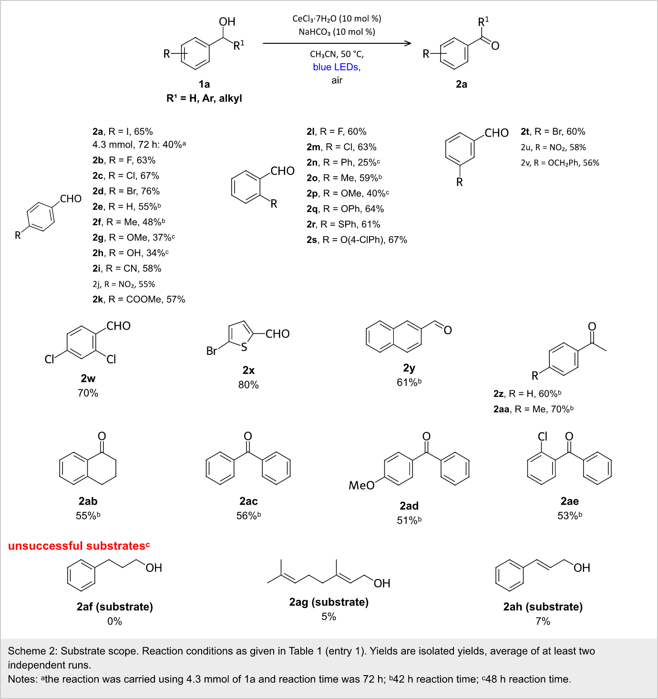

Full-figure blind run · Chem Canvas
Scores and review notes (Chinese)
- 分子结构
- 34/34
- 主收率
- 34/34
- 2w、2x、2y 的实际印法
- 3/3
- 四处图注排版
- 0/4
结构与收率逐项核对。成图在收率换行、反应头下分隔线和最后三项标签上仍与论文有差异。
The paper combines shared scaffolds, substituent lists, individual structures and unsuccessful substrates. The review checked the structures and yields individually and identified differences in line breaks, the header rule and the final three labels.

结构与收率逐项核对。成图在收率换行、反应头下分隔线和最后三项标签上仍与论文有差异。
沿用原始盲稿的 34 个条目，仅调整 SVG 文字。2a 的 65% 与 40%ᵃ 印在同一行，2af、2ag、2ah 的图号分别与 0%、5%、7% 同行。